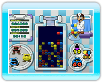

10 |
Reglas y técnicas básicas |
 |

Dr. Mario y Bactericida comparten las mismas reglas y objetivos básicos. A medida que las cápsulas entran en el frasco y caen, tienes que alinearlas con las bacterias del mismo color para exterminarlas. Una vez que hayas eliminado todas las bacterias, aparecerá un menú donde podrás elegir si quieres pasar a la siguiente fase, intentar de nuevo la misma fase o regresar a la pantalla de opciones. Nota: La opción OTRA VEZ solo aparecerá en el modo Clásico de un jugador de Dr. Mario y en Bactericida. ● Eliminar bacterias
● Cadenas y combos
● Fin de la partida |


 |
 |
 |